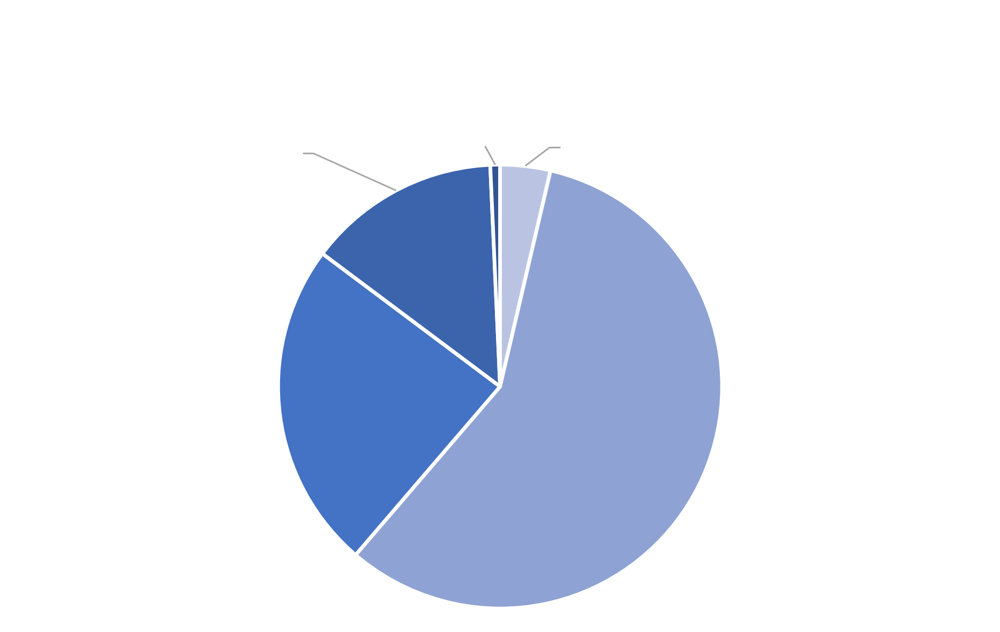
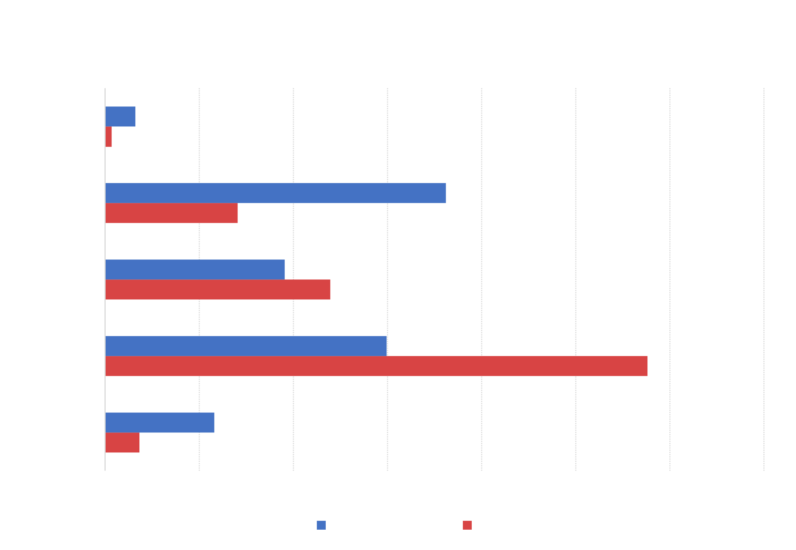
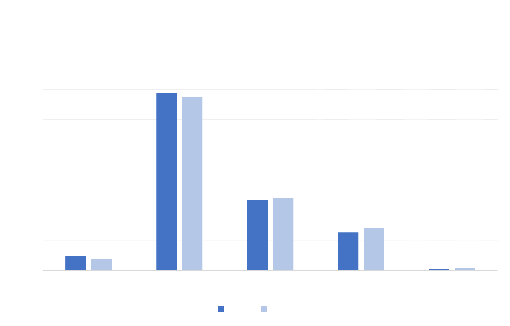

Brooklyn Analysis

In Brooklyn, Black individuals make up the largest proportion of the arrested population at 57%. Hispanic individuals make up 24% of the arrested population, while White, Asian, and Other comprise the remaining 15%.

The chart above compares each demographic group's overall proportion in the composition of the borough with the proportion of arrests on the demographic group within the borough. In Brooklyn, both Hispanic and Black individuals are arrested at a disproportionate rate when compared to their total population count. The Black demographic group makes up 30% of the population in Brooklyn, but 58% of the total arrests. The Hispanic demographic group makes up 19% of the Brooklyn population, but 24% of the total arrests. Meanwhile, White, Asian, and Other groups make up a smaller proportion of the arrested population when compared to their overall population makeup.

The arrest percentage for different demographic groups did not experience drastic changes in Brooklyn between June 2019 and June 2020.